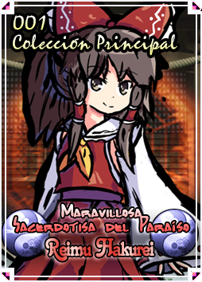

Personaje: Reimu Hakurei
Características del Personaje
Perfil
La sacerdotisa del Santuario Hakurei.
Ella es una humana que protege la frontera que divide lo absurdo y la realidad.
Ella posee una capacidad de volar en el aire y exorcizar espíritus malvados.
Cada vez que ocurre un disturbio, de inmediato se apresura a resolverlo, aunque la mayoría de veces siente que es un fastidio.
Sin embargo, ella nunca se las arregla para librarse de todas las perturbaciones a su alrededor.
Más bien, podría ser el caso que ella atrae las perturbaciones a sí misma.
Mi Opinión del Personaje
Negativo
Reimu apesar de ser la protagonista es muy fácil jugar con ella, aparte no me gusta mucho, ella no tiene mucho misterio, es basicamente es "surge un problema, viene ella y lo resuelve".--Opinión de IkuTronHD
Positivo
Aunque piense mal de Reimu, esta muy bien trabajada más para luchar a largas distancias, y a lo mejor dejo su voz por diversión.--Opinión de IkuTronHD
Diferencias de Hisoutensoku y Immaterial and Missing Power
- El sistema de cartas es distinto, aparte que hay algunas cartas de Soku/UNL y IaMP pero la mayoria son originales, aparte que otras son muy rotas.
- Los movimientos normales no son iguales/idénticos ni a Soku ni a IaMP en tanto a frame data o velocidad